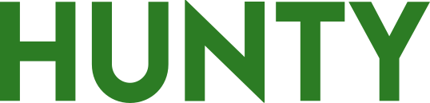
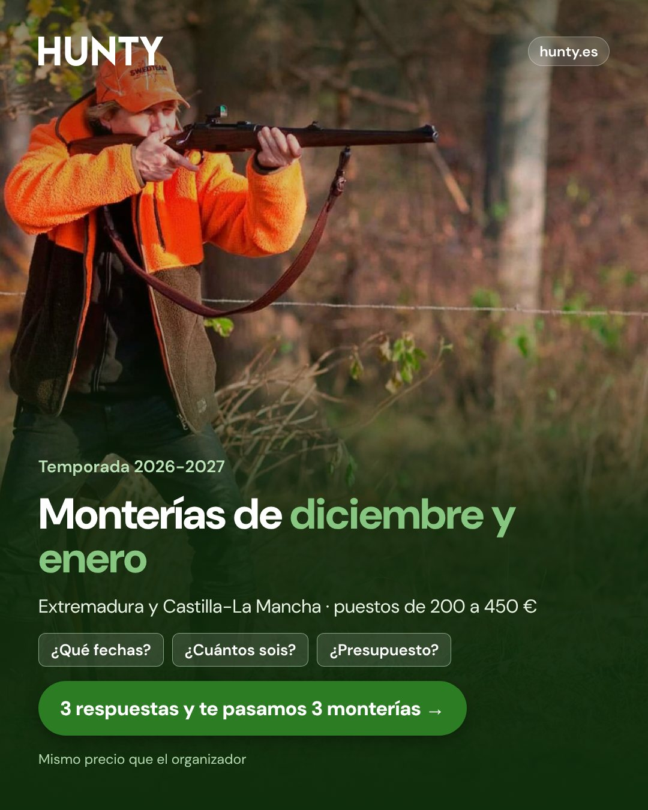
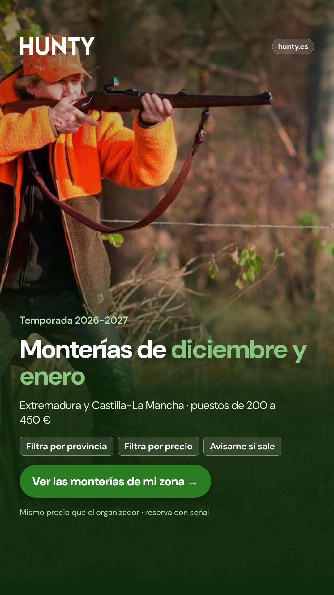
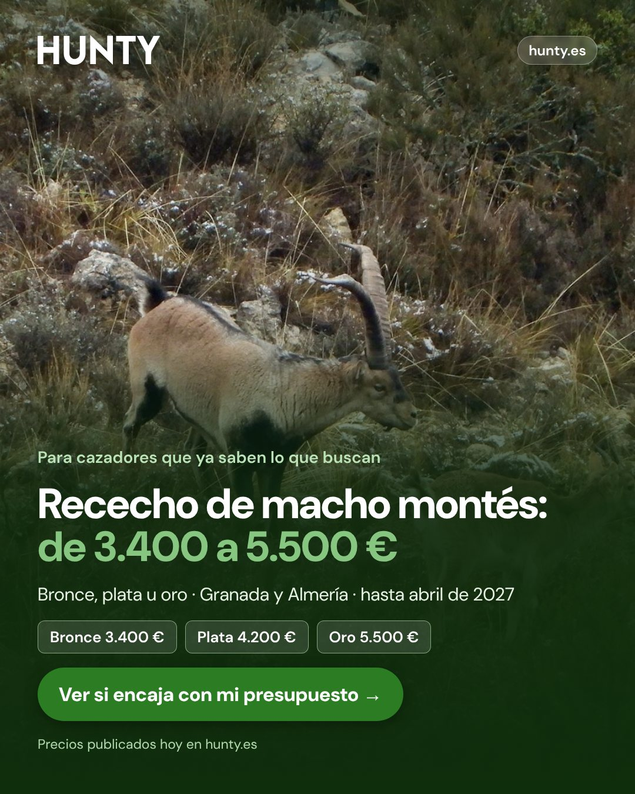
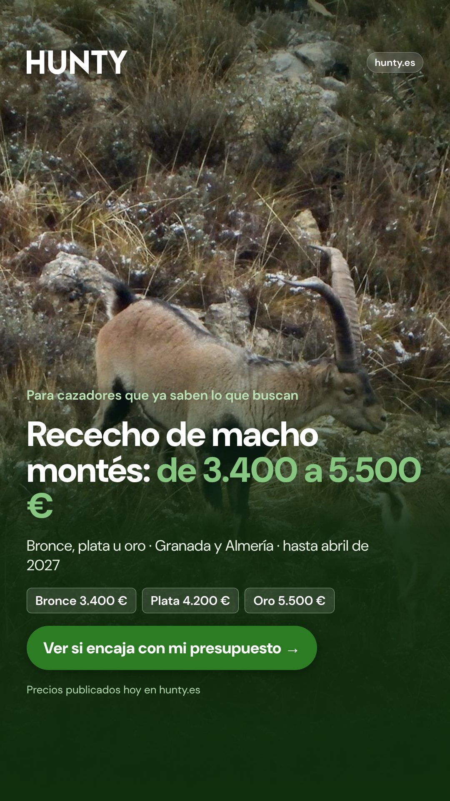
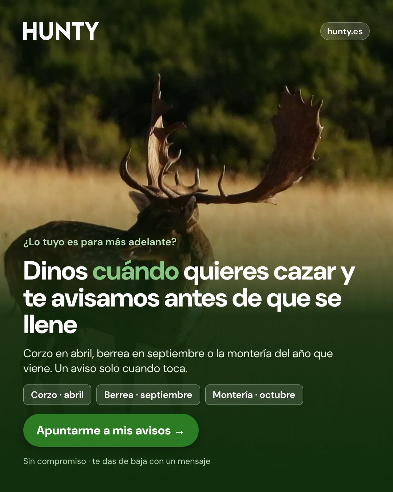
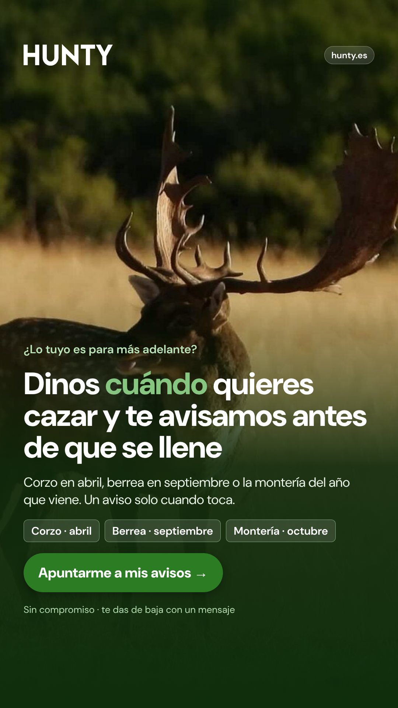
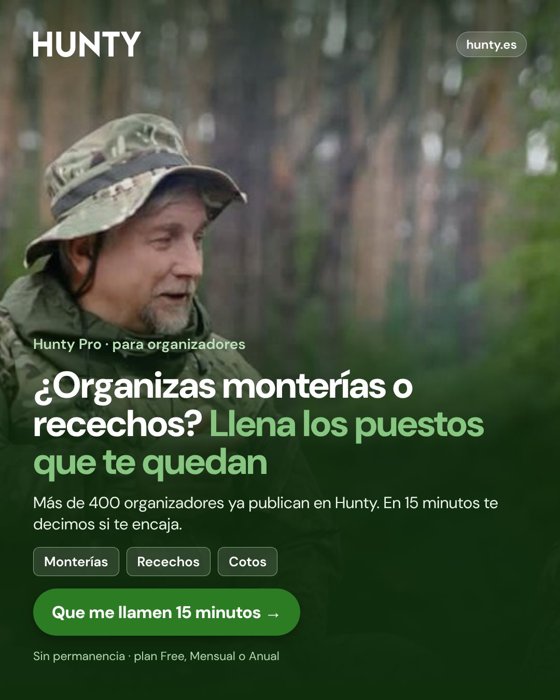
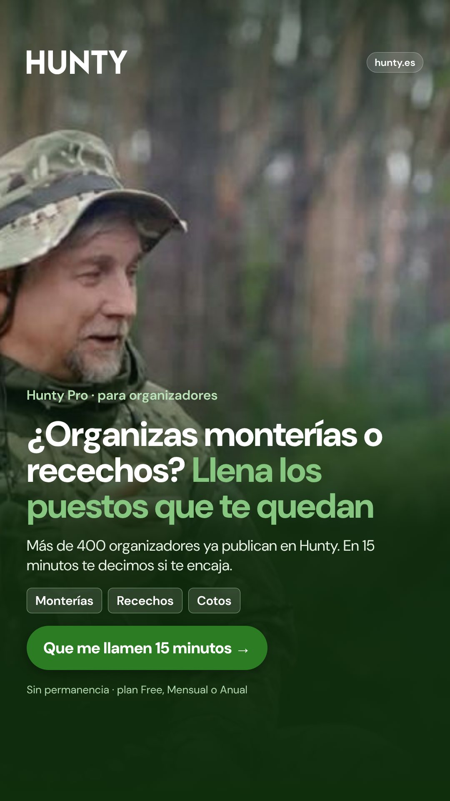

Ocho piezas: tres ángulos para cazadores y uno para organizadores, cada uno en feed (4:5) y story (9:16). Mismo estilo que vuestros anuncios actuales, con un cambio: cada mensaje dice para quién es (fecha, precio o momento), para que llegue menos curioso y más gente con intención.
Diciembre y enero, zona y rango de precio. Pregunta: ¿un mensaje con fecha y precio trae reservas más baratas que «la cuna de la montería»?
Macho montés de 3.400 a 5.500 €. Pregunta: ¿enseñar el precio aparta al soñador y deja al que compra? Es el experimento H1 (web frente a test).
«Dinos cuándo y te avisamos». Pregunta: ¿cuánto cuesta una ficha con temporada y cuántas acaban en reserva cuando llega su momento?
Para organizadores. Pregunta: ¿una llamada de 15 minutos convierte más que el «Registrarme» de /pro?
Destino: página de monterías con filtro de provincia y precio y «avísame si sale» · Público: hombres de 30 a 65 años en España, intereses de caza mayor, y públicos similares a quien ya reservó montería


Texto principal
¿Montería en diciembre o enero? Estas fechas se llenan antes que las de febrero. En Hunty tienes las monterías de Extremadura y Castilla-La Mancha con fecha, puestos y precio a la vista: hoy, de 200 a 450 € el puesto. ✓ Mismo precio que el organizador ✓ Reserva tu puesto con una señal ✓ Filtra por provincia y precio, o pide que te avisemos
Destino (experimento H1): mitad a la página de recechos de macho montés y mitad a un test de 7 toques con respuesta al minuto · Público: cazadores de caza mayor de 35 a 70 años, públicos similares a quien reservó recechos de más de 1.500 €


Texto principal
Rececho de macho montés en Granada y Almería, hasta abril de 2027. Precios publicados hoy en Hunty: Bronce · 3.400 € Plata · 4.200 € Oro · 5.500 € Si estás en ese rango, dinos fechas y nivel de trofeo y en un minuto te escribimos con las opciones que encajan. Si no, mejor no pierdas el tiempo: este no es para ti.
Destino: «avísame» de la página de monterías (temporada, especie, zona y WhatsApp) · Público: visitas de los últimos 90 días sin reserva y seguidores de Hunty


Texto principal
¿Tu próxima cacería no es esta semana? Mejor. Dinos qué quieres cazar y cuándo (corzo en abril, berrea en septiembre o la montería del año que viene) y te escribimos por WhatsApp unas semanas antes, con lo que haya publicado y antes de que se llene. Un aviso solo cuando toca. Te das de baja con un mensaje.
Destino: formulario corto (jornadas por temporada, modalidades, provincia, si ya vende online) → WhatsApp al minuto → llamada de 15 minutos · Público: administradores de fincas y organizaciones cinegéticas, intereses de gestión de cotos, y LinkedIn por cargo


Texto principal
¿Te quedan puestos libres en tus monterías o recechos sin vender? Más de 400 organizadores ya publican sus jornadas en Hunty. Publicar es gratis. Con Hunty Pro, tus jornadas salen en portada y en el correo a nuestra base de cazadores, y la comisión baja del 14 % al 12 % o al 10 %. Cuéntanos qué organizas y te decimos en 15 minutos si te encaja.
| Qué | Cómo |
|---|---|
| Estructura | Una campaña por ángulo y un conjunto de anuncios por formato. A se compara con vuestros anuncios actuales de monterías (mismo público y presupuesto). B se reparte al 50 % entre la web y el test (H1). |
| Presupuesto de prueba | A: 40-60 €/día · B: 30-40 €/día (repartido 50/50) · C: 15-20 €/día · D: 15-20 €/día. Durante 3-4 semanas. Propuesta que se ajusta a lo que invertís hoy: no hace falta gastar más para empezar. |
| Primeros 7 días | Ver qué mensaje para el scroll (retención a 3 s en story y CTR) y cuál pasa del clic a visita con intención. No se apaga nada antes de 2.000-3.000 impresiones por anuncio. |
| Qué decide | No el coste por clic ni por contacto, sino el coste por reserva y los € de comisión por € invertido. C se juzga por su cohorte (reservas cuando llega su temporada) y D por las altas de Hunty Pro. |
| Cuándo se corta | Si un anuncio gasta 2 veces el coste por reserva objetivo sin reserva ni contacto A, se apaga. B-test se apaga si a las 4 semanas no mejora en al menos un 15 % el coste por reserva frente a B-web. |
| Después | El mensaje que gane se queda y se le hacen 3 ganchos nuevos sobre la misma idea. Se cambia la pieza cada 3-4 semanas: las actuales llevan desde julio. |
| Anuncio (ID de la Biblioteca) | Qué pasa | Arreglo |
|---|---|---|
| Recechos de muflón · 1371734191598607 | Lleva a hunty.es/especies/corzo | Enlace a /especies/muflon (mejor aún, a los recechos de muflón) |
| Monterías Castilla-La Mancha · 2368630826877479 | Lleva al buscador filtrado por Extremadura | Cambiar el filtro de comunidad |
| Monterías Andalucía · 3323657874480438 | Lleva al buscador filtrado por Extremadura. El texto dice «desde 180€» y el titular «desde 220€» | Cambiar el filtro y cuadrar los precios |
| Monterías (los 3 de comunidad) | El referred_by va dentro de commit=Buscar%3F… | Añadirlo como &referred_by=… para que se registre |
| Recechos de ciervo · 1350175807273158 | Habla de berrea a mediados de octubre | Cambiar a ronca del gamo o a montería |
Comprobado el 16-oct en la versión que muestra la Biblioteca de anuncios de Meta (España). Puede haber otras versiones con otros enlaces.
Maikel Echevarría · Qualivo · maikel@qualivo.io · +34 647 11 84 91 · qualivo.io
Maqueta preparada el 16 de octubre de 2026 para Hunty. No son anuncios publicados.